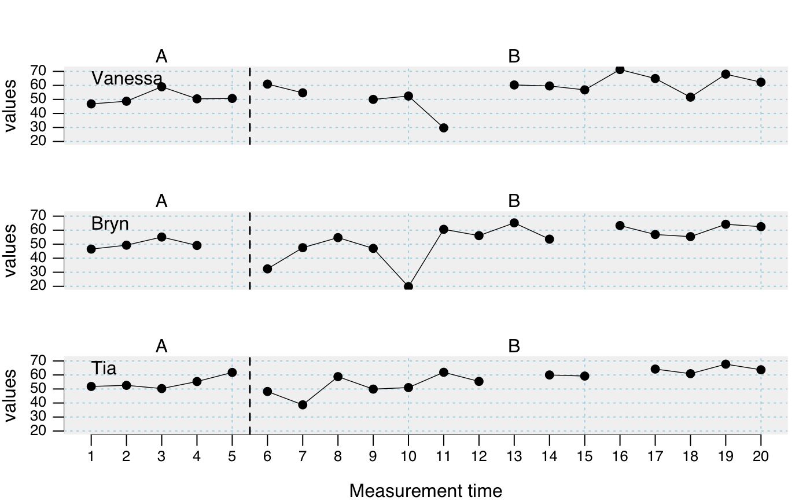

random.RdThe rSC function generates random single-case data frames
for monte-carlo studies and demonstration purposes.
design_rSC is used to set up a design matrix with all parameters needed for the rSC function.
rSC(design = NULL, round = NA, random.names = FALSE, seed = NULL, ...) design_rSC( n = 1, phase.design = list(A = 5, B = 15), trend = list(0), level = list(0), slope = list(0), rtt = list(0.8), m = list(50), s = list(10), extreme.p = list(0), extreme.d = c(-4, -3), missing.p = list(0), distribution = "normal", prob = 0.5, MT = NULL, B.start = NULL )
| design | A design matrix which is created by design_rSC and specifies all paramters. |
|---|---|
| round | Rounds the scores to the defined decimal. To round to the second
decimal, set |
| random.names | Is |
| seed | A seed number for the random generator. |
| ... | Paramteres that are directly passed from the rSC function to the design_rSC function for a more concise coding. |
| n | Number of cases to be created (Default is |
| phase.design | A vector defining the length and label of each phase.
E.g., |
| trend | Defines the effect size d of a trend per MT added
across the whole data-set. To assign different trends to several
single-cases, use a vector of values (e.g. |
| level | Defines the level increase (effect size d) at the
beginning of phase B. To assign different level effects to several
single-cases, use a vector of values (e.g. |
| slope | Defines the increase in scores - starting with phase B -
expressed as effect size d per MT. |
| rtt | Reliability of the underlying simulated measurements. Set
|
| m | Mean of the sample distribution the scores are drawn from. Default
is |
| s | Standard deviation of the sample distribution the scores are drawn
from. Set to |
| extreme.p | Probability of extreme values. |
| extreme.d | Range for extreme values, expressed as effect size d.
|
| missing.p | Portion of missing values. |
| distribution | Distribution of the scores. Default is |
| prob | If |
| MT | Number of measurements (in each study). Default is |
| B.start | Phase B starting point. The default setting |
A single-case data frame. See scdf to learn about this format.
Juergen Wibert
## Create random single-case data and inspect it design <- design_rSC( n = 3, rtt = 0.75, slope = 0.1, extreme.p = 0.1, missing.p = 0.1 ) dat <- rSC(design, round = 1, random.names = TRUE, seed = 123) describeSC(dat)#> Describe Single-Case Data #> #> Design: A B #> #> Vanessa Bryn Tia #> n.A 5 5 5 #> n.B 15 15 15 #> mis.A 0 1 0 #> mis.B 2 1 2 #> #> Vanessa Bryn Tia #> m.A 51.12 50.00 54.36 #> m.B 57.12 52.79 56.89 #> md.A 50.40 49.20 52.60 #> md.B 59.60 55.75 59.20 #> sd.A 4.67 3.63 4.54 #> sd.B 10.40 12.89 8.00 #> mad.A 2.52 2.08 3.41 #> mad.B 7.86 10.60 6.67 #> min.A 46.80 46.50 50.30 #> min.B 29.70 19.70 38.70 #> max.A 59.00 55.10 61.80 #> max.B 71.30 65.20 67.70 #> trend.A 0.95 1.36 2.27 #> trend.B 0.94 1.69 1.36## And now have a look at poisson-distributed data design <- design_rSC( n = 3, B.start = c(6, 10, 14), MT = c(12, 20, 22), m = 10, distribution = "poisson", level = -5, missing.p = 0.1 ) dat <- rSC(design, seed = 1234) pand(dat, decreasing = TRUE, correction = FALSE)#> Percentage of all non-overlapping data #> #> PAND = 95.9 % #> F = 0.918 ; F² = 0.843 #> #> Number of Cases: 3 #> Total measurements: 49 (in phase A: 23; in phase B: 26) #> n overlapping data per case: 2, 0, 0 #> Total overlapping data: n = 2 ; percentage = 4.1 #> #> 2 x 2 Matrix of proportions #> % expected #> A B total #> % A 44.9 2 46.9 #> real B 2 51 53 #> total 46.9 53 #> #> 2 x 2 Matrix of counts #> expected #> A B total #> A 22 1 23 #> real B 1 25 26 #> total 23 26 #> #> #> Correlation based analysis: #> #> z = -4.993, p = 0.000, t = -0.721